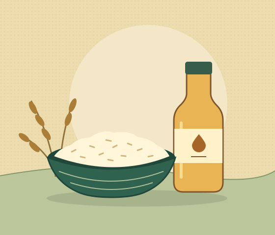

Rice
A staple families can use across several meals.
Community food support · Mae Sot, Thailand
Help put rice, cooking oil, and other everyday essentials on the table for people facing food shortages in Mae Sot.

Rice and cooking oil are where every run startsSmall gifts, shared purpose
We pool contributions of every size to buy supplies. Even 1 Baht can go toward the next bag of rice or bottle of oil.
A staple families can use across several meals.
An everyday ingredient for preparing meals at home.
Basic necessities chosen according to what people need.
Fellowship in action

Featured food run
Take a look at the food packs shared with members of the Mae Sot community during our September run.
Browse all albumsFrom gifts to groceries
Contributions of all sizes go toward a shared supply budget.
We choose staples like rice and cooking oil based on what people need.
We pack the supplies for distribution and share updates about the run.
What you can expect from us
We aim to share what came in, what we spent, and what remains for the next run.
We ask before sharing identifiable photos or stories. Receiving help never depends on being photographed.
We listen to what people in Mae Sot need and buy supplies to match.
Give what feels right, from ฿1. We share what was bought and what was distributed.